Brand A and Brand B
Imagine two Shopify brands.Brand A does €5 million a year in revenue.Your post, May
A pair of made-up brands with specific numbers, and the quieter one wins.
Built from your YouTube channel, the two podcasts and your LinkedIn posts. Three posts, a topic map, a carousel and two lead magnets, in your voice and your brand. The plan for October is at the bottom.
Each one with your own line beside it.
Imagine two Shopify brands.Brand A does €5 million a year in revenue.Your post, May
A pair of made-up brands with specific numbers, and the quieter one wins.
From the outside, it looks unbelievable.But when you actually look under the hood:Your post, May
The surface first, then the real state of the business. The ads-off post below is built on that turn.
They care about one thing: “How predictable is the profit?”Your post, May
You judge a brand the way someone about to acquire it would.
And to be fair, acquisition matters. You obviously need new customers coming in.Your post, June
You give the other side its fair point before you continue, so every profit post keeps one concession.
They're not counting creator fees. Agency fees. The smaller tools that quietly run in the background & your less obvious subscriptions.Your post, April
It carries the true CAC post and both lead magnets.
We're bringing an intern in for Q4!!Your post, August
Profit posts are calm, with zero emoji. People posts carry the warmth.
Press “see more” to open each one.
Post 1 · cut from your podcast · 287 wordsThe podcast with Karl O'Brien, co-founder of StoreHeroIt ends on a question a founder can put to their own agency.
Post 2 · cut from your video · 302 wordsThe Only Metric That Actually Controls Growth (CAC vs LTV)Short paragraphs, the layout of your June posts.
Post 3 · cut from your video · 247 wordsIf Your Ads Stopped Tomorrow, Would Your Brand Survive?Stacked lines, the layout of your May posts. Brand A and Brand B, then under the hood.
Tell me which lines you would never say and I'll fix them. Reply with the line and I fix the rule behind it. That feedback is how the voice gets dialled in.
Every topic comes from your own videos, podcasts and posts, tagged by who it is for.
We recorded a podcast with Karl O'Brien a few months back and one of the topics on the table was why brands hate agencies, and where those relationships actually fall apart.
From Why Most eCommerce Brands Think They're Profitable (They're Not) - Karl Co-founder of Storehero
One number from the pod with Karl O'Brien has stuck with me more than any other. He'd push any brand to keep fixed costs, so team and admin, at 10 to 15% of net sales, and he walked through what happens to the ad account when that creeps up to 25%.
From Why Most eCommerce Brands Think They're Profitable (They're Not) - Karl Co-founder of Storehero
Earlier this year we were getting a brand set up on StoreHero, and their internal CFO jumped on the call while we were inputting the costs. He told me he didn't understand how this information was going to help us do a better job on the marketing side.
From Why Most eCommerce Brands Think They're Profitable (They're Not) - Karl Co-founder of Storehero
Niall Harty from All Real Nutrition told us on the pod that he stood in a Holland & Barrett in London for about 20 minutes, just watching the shelf. By his count roughly one in every five customers picked up a product and scanned it on an app before deciding.
From How All Real Became One of Ireland's Fastest Growing Subscription Brands
Niall Harty told us on the pod that in Q3 2024 All Real's back was to the wall. He pulled out his phone, found five videos with over a million views, rescripted them himself, shot them, and started raising the budget 10 to 20% a day.
From How All Real Became One of Ireland's Fastest Growing Subscription Brands
If you're the founder of a €3m brand and you're still approving ad creative at 11pm, this one is for you. At €1m you have to do everything, at €3m you really shouldn't, and it's something I've had to accept in my own business too.
From The €100k Ecommerce Ceiling Explained / The 4 Roles Every Ecommerce Brand Needs To Grow
I was speaking to somebody recently who got approached to sell their ecommerce brand. On paper it looked incredible, with 7 figures in revenue and strong growth, and the buyer still flagged one thing straight away.
From What Buyers Look For Before Acquiring a Shopify Brand
When we recorded the pod with Karl O'Brien from StoreHero, he walked through what a Monday morning marketing meeting looks like inside a brand. Everyone spends the morning pulling the numbers for their own channel, the junior people are dropping screenshots into ChatGPT, and each person walks in with a slightly different picture of the same store.
From Why Most eCommerce Brands Think They're Profitable (They're Not) - Karl Co-founder of Storehero
I asked Karl O'Brien on the pod what he sees different between the US brands and the Irish ones. His read was that in Europe, when a founder doesn't have good data, keeping the ROAS high feels like the safe thing to do.
From Why Most eCommerce Brands Think They're Profitable (They're Not) - Karl Co-founder of Storehero
I set up my first dropshipping store at about 16, selling a necklace with an image I got off Google, and Meta found me a buyer inside 24 hours. I think about that a lot when founders ask me to explain Andromeda, because these days the ad itself is doing the targeting.
From Meta Andromeda Explained Simply (And What It Means for Your Ads)
We got onto something with Karl O'Brien on the pod that comes up in our own client calls a lot. A brand's ROAS goes up in the same week the profit goes down, and finding out why usually takes somebody a ton of work.
From Why Most eCommerce Brands Think They're Profitable (They're Not) - Karl Co-founder of Storehero
For years I thought my job was to improve the ROAS, and to be fair I think a lot of us were in that boat before COVID. I've only properly educated myself on CAC to LTV over the last 3 years, and the first thing I learned was how many costs get left out of the CAC.
From The Only Metric That Actually Controls Growth (CAC vs LTV)
We pushed a client's Meta spend until the CPA got to break even, and we were happy to leave it there. That made sense because the business had a CAC to LTV ratio of 1 to 7.
From Fix an unprofitable shopify store in 7 days
Niall Harty said something on our pod that I've repeated to a few founders since. For years himself and his co-founder Ross did everything together at All Real, and the turning point was the day it became Niall on the line for online and Ross on the line for retail.
From How All Real Became One of Ireland's Fastest Growing Subscription Brands
A few years ago one of our clients did about half a million in sales across a few days of Black Friday, and we all celebrated. When we reviewed it in January, the margins were gone.
From Black Friday & Cyber Monday: The Step-By-Step Playbook
I did an audit recently where the founder had written off Google completely. His argument was fair enough, he was spending the money and couldn't see it in his monthly sales.
From Don't Turn Off Branded Search Until You Watch This
I asked Karl O'Brien on the pod what he'd do if he was starting a brand tomorrow, and I told him I didn't want a political answer. If you run a supplement or wellness brand, what he said about margin is worth ten minutes of your day.
From Why Most eCommerce Brands Think They're Profitable (They're Not) - Karl Co-founder of Storehero
Imagine a supplement brand doing €3m a year with a CAC payback of seven months. Every time they scale the ads, they are effectively financing that growth out of their own cash for more than half a year.
From CAC Payback Period Explained for Ecommerce (Scale Without Cash Problems)
All Real is Niall Harty's fifth brand!! When he told us on the pod about sitting outside his first SuperValu with a boot full of bars he'd made that morning, banging his head on the steering wheel before going in to sell them, I'd say every founder listening felt that one.
From How All Real Became One of Ireland's Fastest Growing Subscription Brands
We've been shortlisted at the Digital Media Awards for Best Conversion Strategy with fabÜ UK!! I want to use this one to say what the work was, because a shortlist on its own tells a founder very little.
From Digital Media Awards shortlist / eCommerce Awards nominations (own posts)
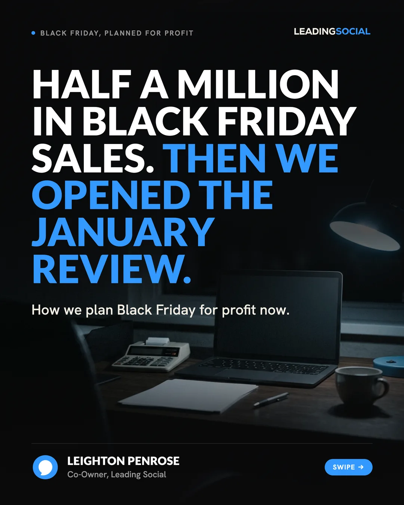
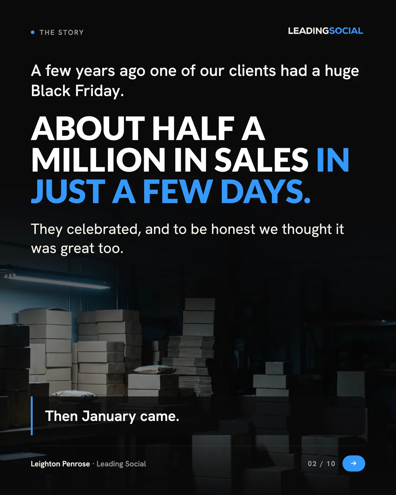
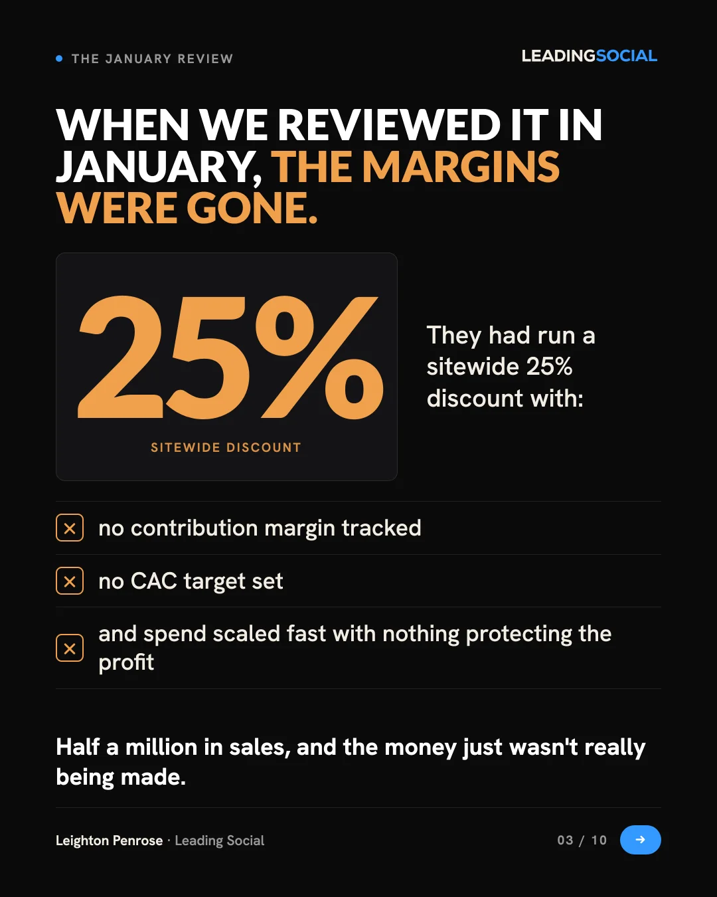
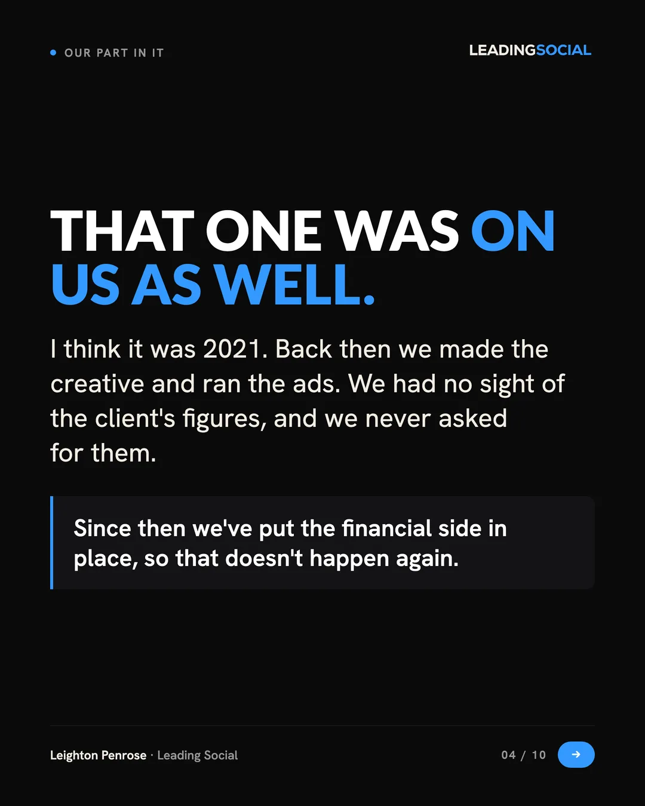
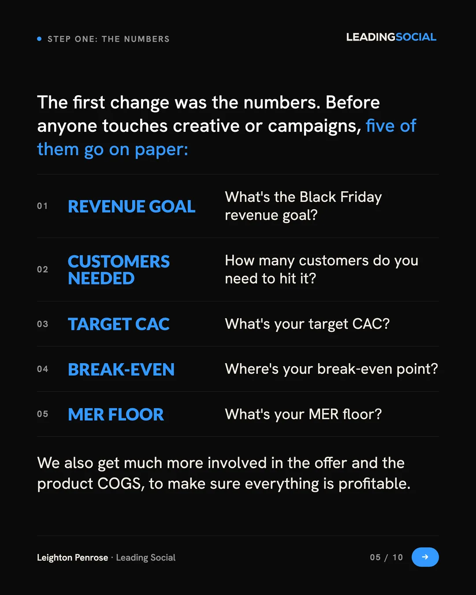
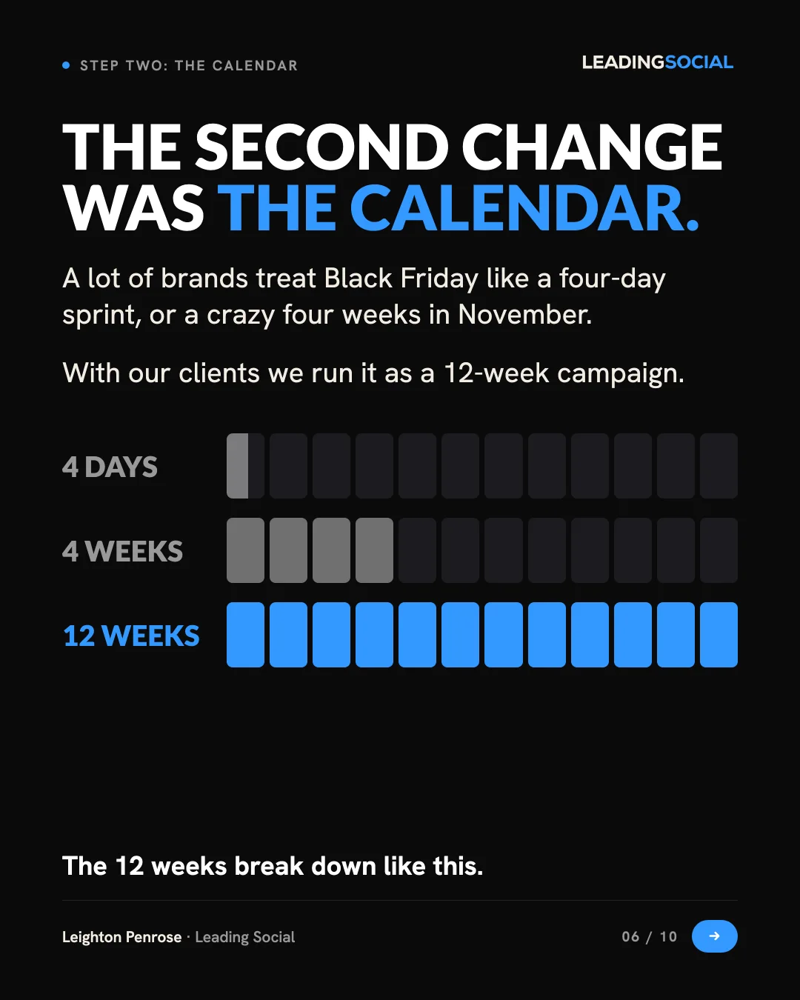
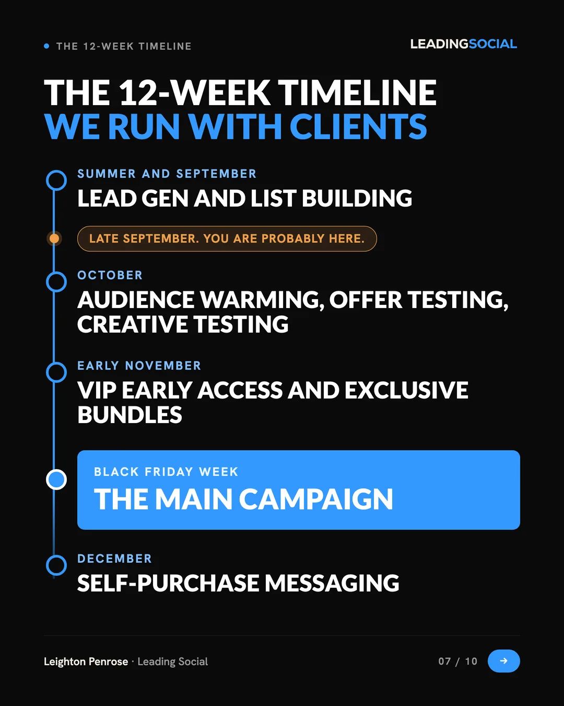
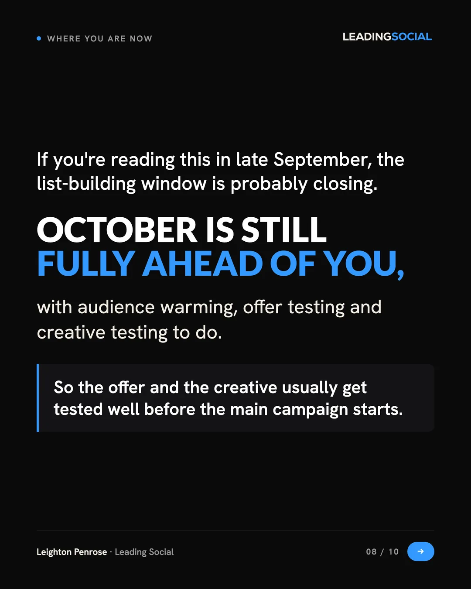
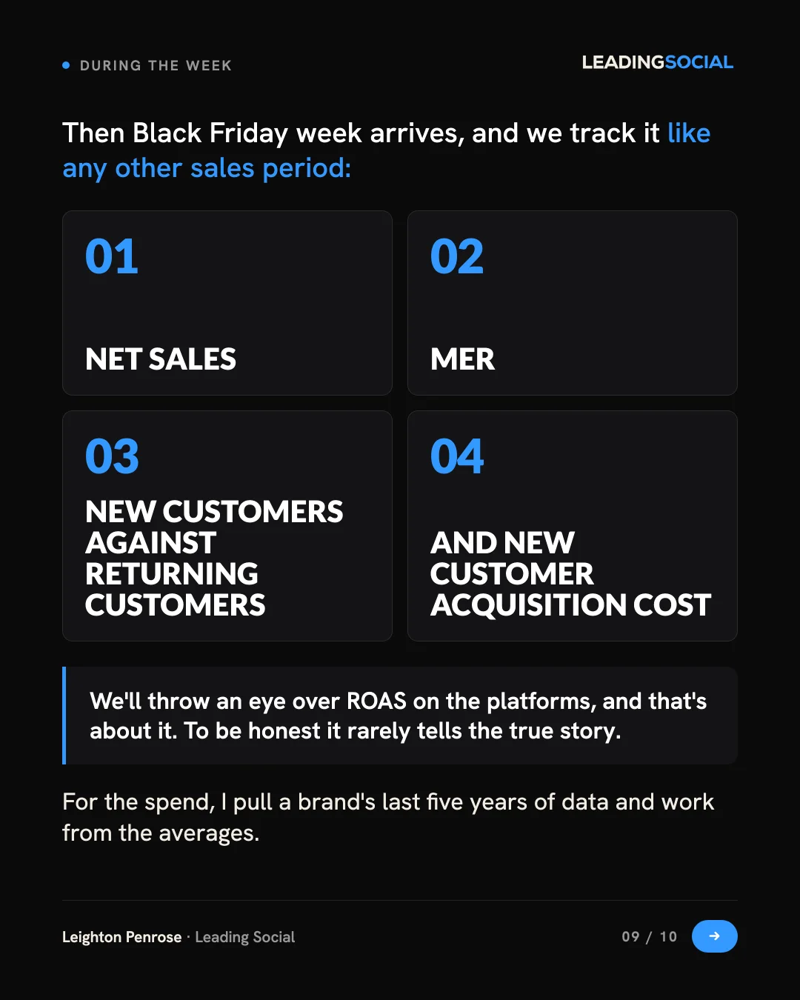
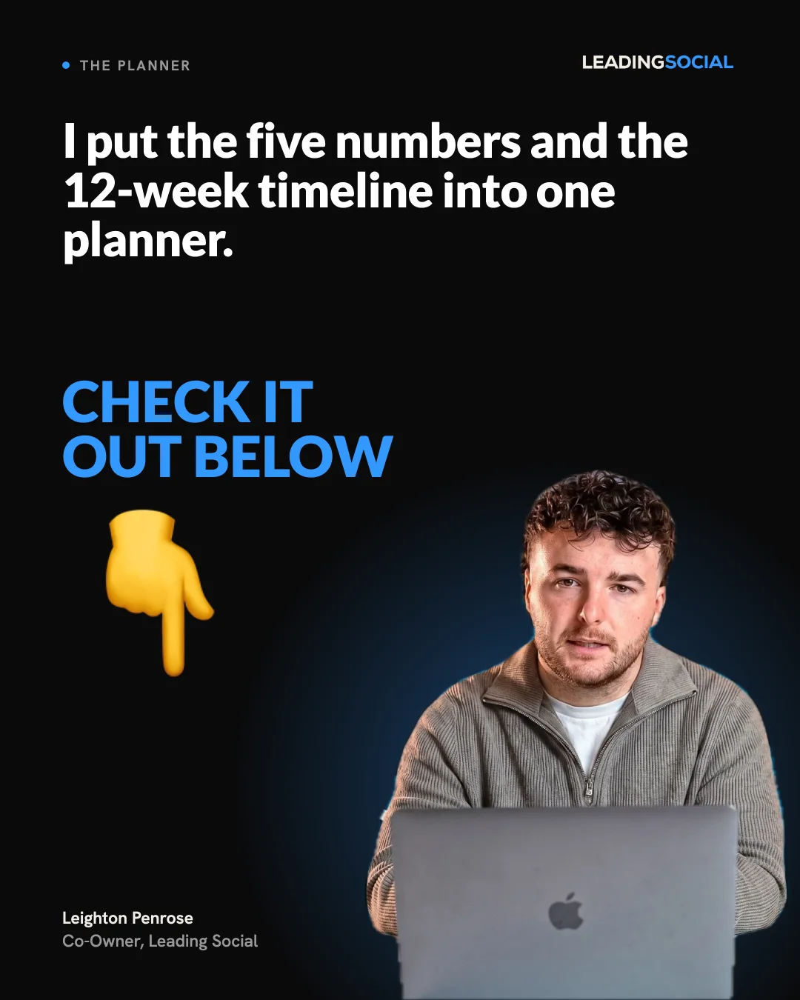
Set in your brand. It's late September, so this one is ready to post now.
The last slide offers a planner by keyword, so I built the planner too. One page.
Both run on the numbers and thresholds from your videos.
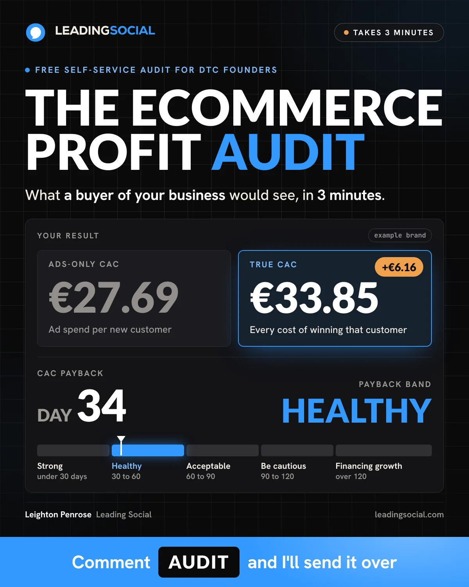
A three-minute self-service audit. The founder types their numbers and sees what a buyer of the business would see: true CAC, MER, payback and the red flags from your videos.
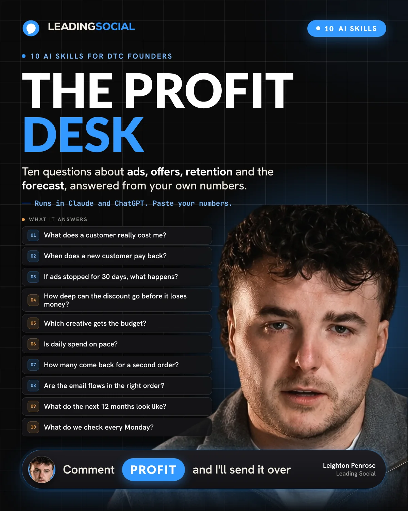
Ten Claude skills a founder runs on their own numbers. They paste the figures they already have and get one table back, with the arithmetic shown.
Press “See it with an example brand” and step through to the result.
The audit is interactive. Open profit-audit/index.html from this folder to try it.
A fictional €3m Irish supplement store that ships with the kit. This is what the founder sees on the first run.
cac-payback/SKILL.md# The Profit Desk, 3 of 10: CAC payback ## What this does Leighton Penrose, on the number his team checks before telling any brand to raise spend: "Your CAC payback is how long it takes to get your money back after you spend that on ads. You send money today, when does the cash come back in?" And on why it outranks ROAS: "ROAS doesn't tell you when the cash comes in, how much working capital you need, how exposed you are. Payback period answers that instantly." This skill places your payback on your own cohort. It builds CAC the way he counts it, compares it with the gross profit a customer has produced by day 0, 30, 60, 90, 180 and 365, names the window where the line crosses, and reads the result against the bands he gives on camera. **The line only this skill produces:** the day window in which one real cohort of your customers repaid a CAC that includes agency, creator, content and tool costs, with the euro gap at every window before it. [...] **Refusal 3, no cohort, no payback beyond the first order.** Without item 5 the skill prints the day 0 line only: CAC against gross profit on the first order. It will not assume a repeat rate, a subscription length or a category retention curve. ``` [NEEDS: cumulative orders per customer at day 30, 60, 90, 180, 365 for one cohort] Computable: CAC, first-order gross profit, first-order gap. Not computable: payback window, CAC to LTV multiples, cash carried. ``` [...] **Step 5, read the band.** His bands, word for word from the CAC payback video: | payback | his read | |---|---| | under 30 days | "you're in a really strong position" | | 30 to 60 days | "you're healthy. Most e-commerce brands are sitting around here" | | 60 to 90 days | "definitely acceptable, but you're going to just need to plan a bit more" | | beyond 90 days | "should make you a little bit cautious" | | over 120 days | "you're effectively financing the growth" |
Excerpt. The bands are your words from the CAC payback video.
Brands pick their new agency for January and February, so October to December is when the calls get booked.
I write, design and publish from your profile. The source is your videos, plus a five-minute voice note on Fridays about what you saw that week.
Built in your brand, with a cover, a keyword and delivery by DM. The Profit Audit and The Profit Desk are the first two.
Warm outreach goes to people who engage with your posts and fit your buyer. Direct outreach goes to founders of €3m to €30m Shopify brands in Ireland, the UK and the US. I handle every reply through to the booked call.
Every post and every first message goes past you before it goes out.
Month to month. No lock-in.
No minimum term, stop whenever you want. All tools and subscriptions are included. Prices in USD, one LinkedIn profile. Your content, audience and email list stay yours.
I build the strategy, create the content and run the conversations that bring relevant buyers to your calendar. One person, in your Slack.
Ivan Manfredi. I work with up to 10 clients at a time.
On the onboarding call we connect your LinkedIn (two minutes, no password shared), lock the target list for the outreach, and I show you the first week scheduled.
{kind=link}
{kind=link}